Práctica 3.5 - Despliegue de una aplicación Flask
Para poder realizar esta practica necesitaremos tener previamente estos paquetes instalados: Nginx, Gunicorn y Pipenv.
Procedimiento completo para el despliegue
El primer paso será Actualizar los repositorios de paquetes del sistema e Instalar Python.
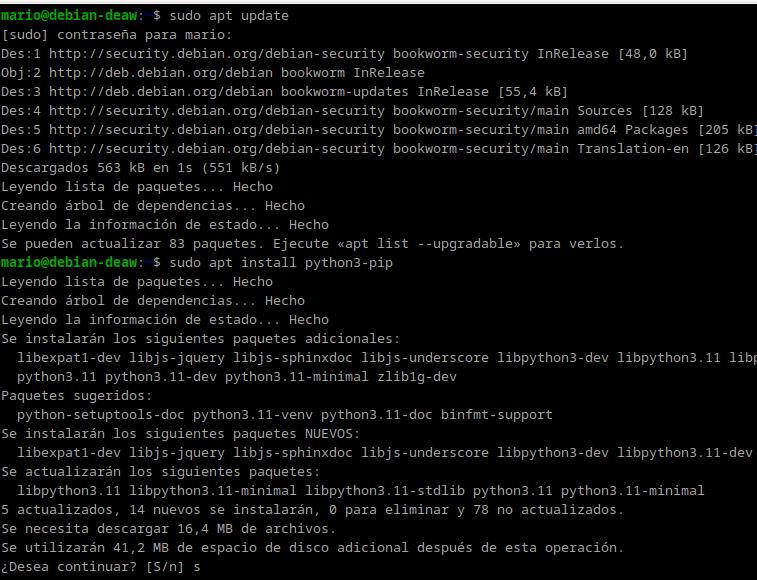
Además instalaremos el paquete pipenv que se encargará de gestionar los entornos virtuales y comprobamos su versión
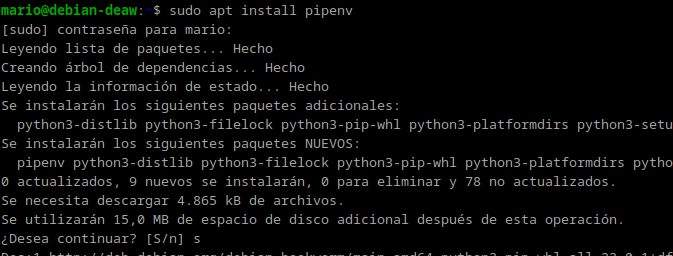
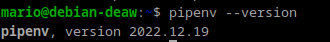
Creamos el directorio en el que almacenaremos nuestro proyecto:
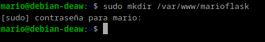
Como lo creamos con sudo, los permisos pertenecen al usuario root del sistema:
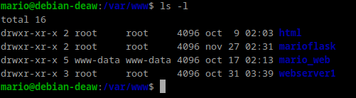
Hay que cambiar los permisos para que pertenezcan a nuestro usuario y pertenezca al grupo www-data.
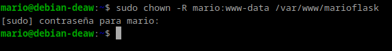
Tendremos que Establecer los permisos adecuados para que pueda ser leído por todo el mundo
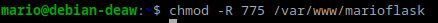
dentro del directorio creado se creará el archivo oculto .env
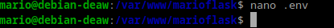
que contendrá las variables de entorno con el comando
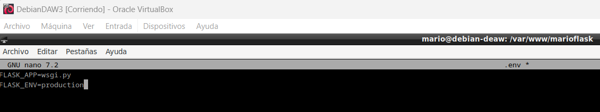
verificamos los cambios con cat .env
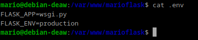
Iniciaremos el entorno virtual y Pipenv cargará las dependencias del archivo .env
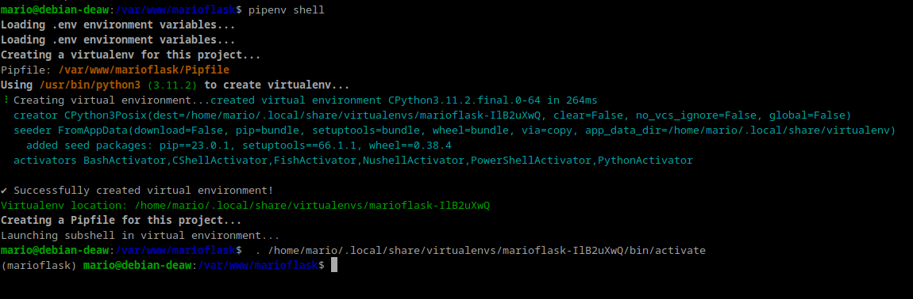
Lo siguiente será instalar las dependencias necesarias para nuestro proyecto
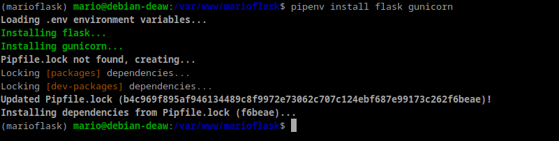
Se crearán los archivos app.py y wsgi.py que contendrán lo siguiente:
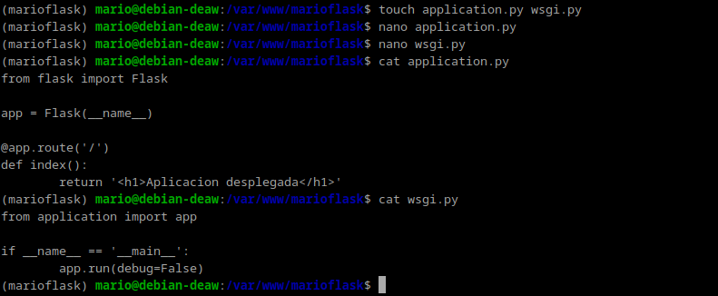
ahora ejecutaremos nuestra aplicación a modo de comprobación con el servidor web integrado de Flask
especificamos la dirección 0.0.0.0 para que escuche en todas sus interfaces.
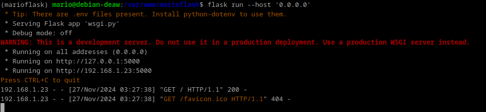
Ahora accedemos desde nuestro navegador a la dirección proporcionada http://IP-maq-virtual:5000 y nos debería mostrar ver lo siguiente:
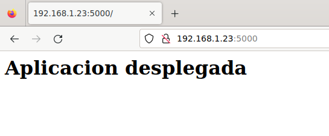
comprobaremos que Gunicorn funciona correctamente:
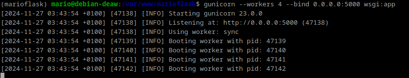
debemos tomar nota de cual es el path o ruta desde la que se ejecuta gunicorn para poder configurar más adelante un servicio del sistema.
Con el siguiente comando:
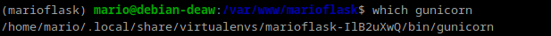
Por último, salimos del entorno virtual con deactivate
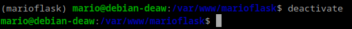
El siguiente paso será Iniciar Nginx y comprobar que su estado sea activo.
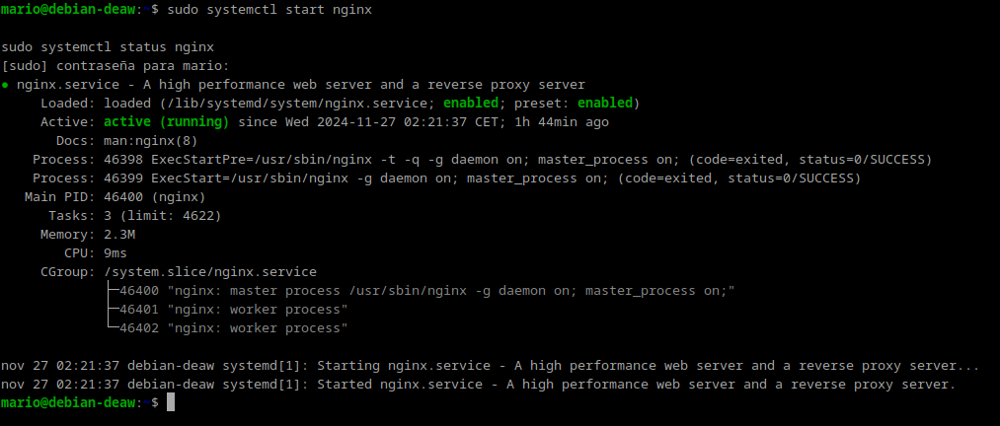
Se creará un archivo de configuración para que systemd ejecute Gunicorn como otro servicio mas:
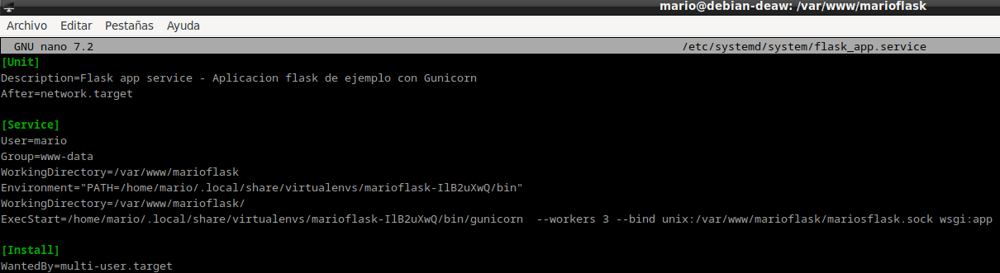
habilitamos el servicio lo iniciamos y comprobamos que está en funcionamiento:
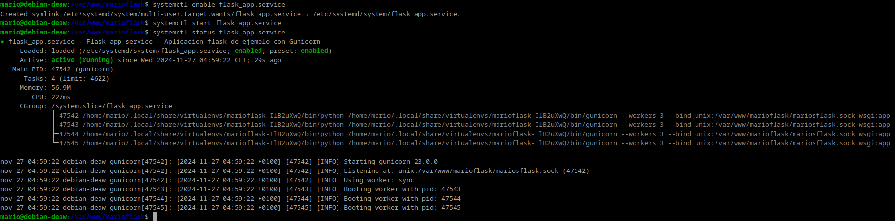
Ahora crearemos un archivo de configuración en Nginx y lo configuraremos de la siguiente manera.
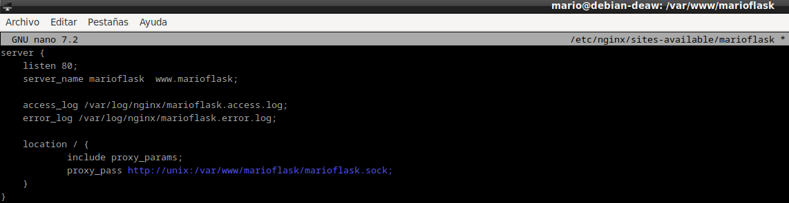
despues crearemos el enlace simbólico para que Nginx pueda acceder a los archivos de la aplicación:
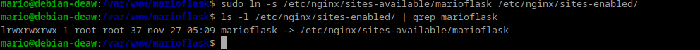
Comprobaremos que la configuración de Nginx es correcta:
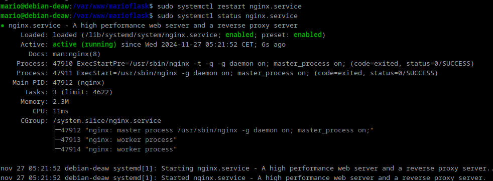
editamos el archivo /etc/hosts de nuestra máquina para que asocie la IP de la máquina virtual:
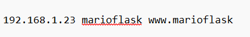
Por ultimo accedemos a nuestro navegador para comprobar que funciona.
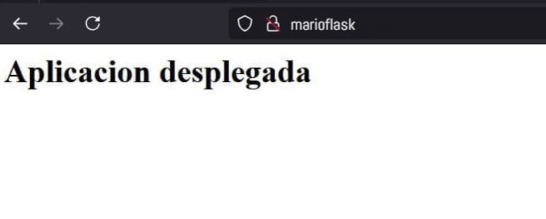
Ejercicio
Repetimos todo el proceso con la aplicación del siguiente repositorio: https://github.com/raul-profesor/Practica-3.5.
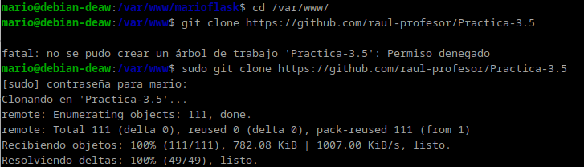
cambiaremos los permisos del directorio y los propietarios:
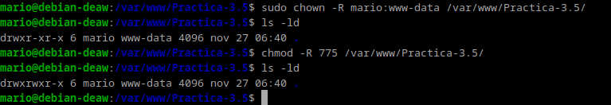
Creamos un archivo oculto .envdentro del directorio de nuestra aplicación con touch .env.
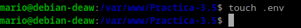
Editamos el archivo como hicimos anteriormente.
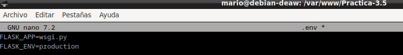
Iniciamos nuestro entorno de la practica.
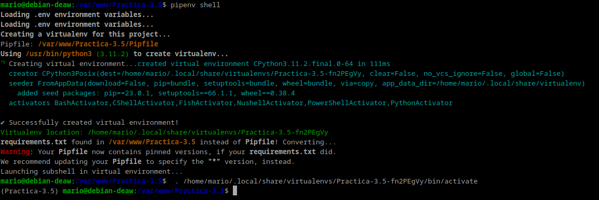
intalamos sus dependencias y gunicorn.
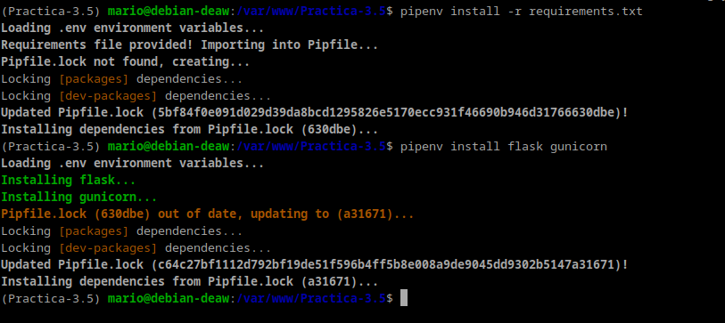
por ultimo creamos el archivo wsgi.py y lo editamos.
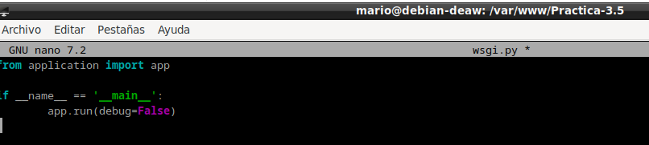
Ejecutaremos la aplicacion y entramos en la ip proporcionada para que nos muestre la pagina en funcionamiento
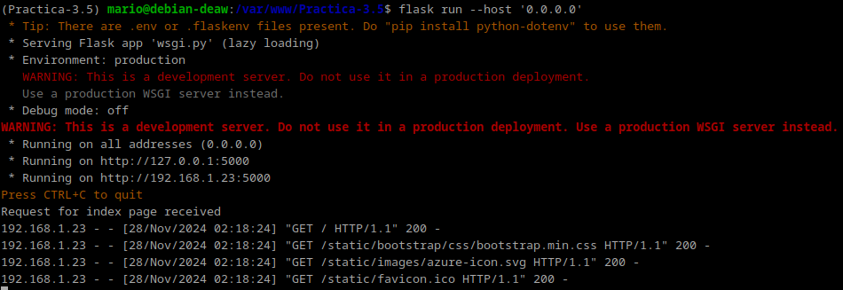
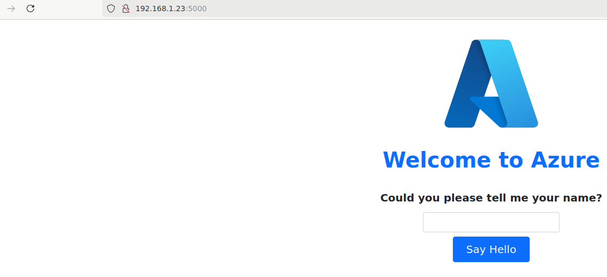
todo correcto.
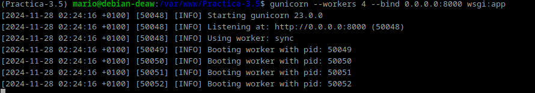
obtendremos el path de Gunicorn para los siguientes pasos y saldremos del entorno virtual.
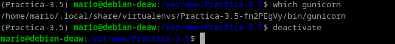
Ahora se desplegarla en Nginx.
Creamos un archivo para que systemd corra Gunicorn
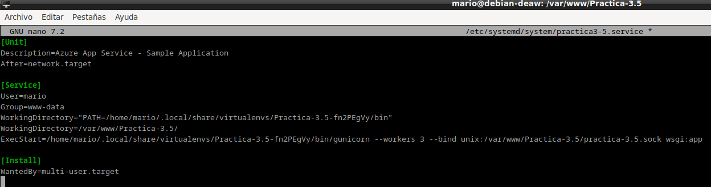
tendremos que configurar el sitio web de Nginx
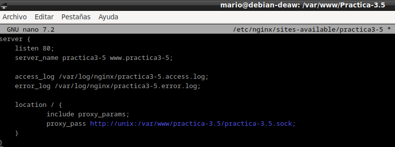
Se habilitará el servicio y se hará el enlace simbólico:
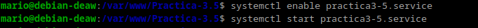
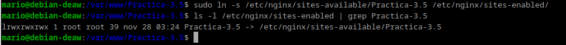
Tendremos que comprobar que el servicio está correcto y funciona correctamente
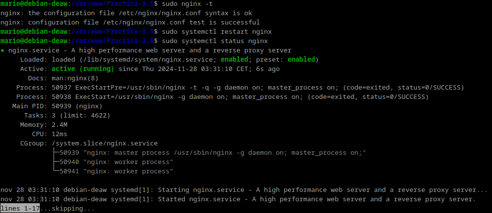
Por último tendremos que editar el archivo /etc/hosts y añadir la IP nuestra máquina a nuestro server_name.
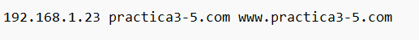
comprobamos que la aplicación final funciona:
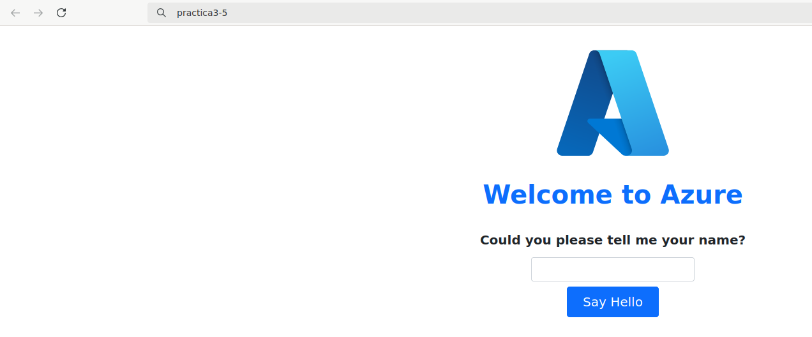
Cuestion
Un servidor WSGI (Web Server Gateway Interface) es un intermediario entre un servidor web (como Nginx o Apache) y una aplicación Python (como Flask o Django). Su función principal es traducir las solicitudes del servidor web a un formato que la aplicación Python pueda entender y, luego, devolver la respuesta generada por la aplicación al servidor web.
¿Por qué lo necesitamos? Los servidores web están diseñados para manejar conexiones y archivos estáticos, pero no pueden ejecutar directamente el código Python de una aplicación. El servidor WSGI facilita esa comunicación y permite que las aplicaciones Python funcionen correctamente en un entorno de producción.
Ejemplo: Cuando un usuario visita tu sitio web, el servidor web (Nginx) pasa la solicitud al servidor WSGI (como Gunicorn), que ejecuta la aplicación Python (como Flask), y luego le devuelve al servidor web la respuesta que será enviada al navegador.
En resumen, un servidor WSGI actúa como puente entre el servidor web y la aplicación Python, permitiendo que trabajen juntos para manejar solicitudes web.